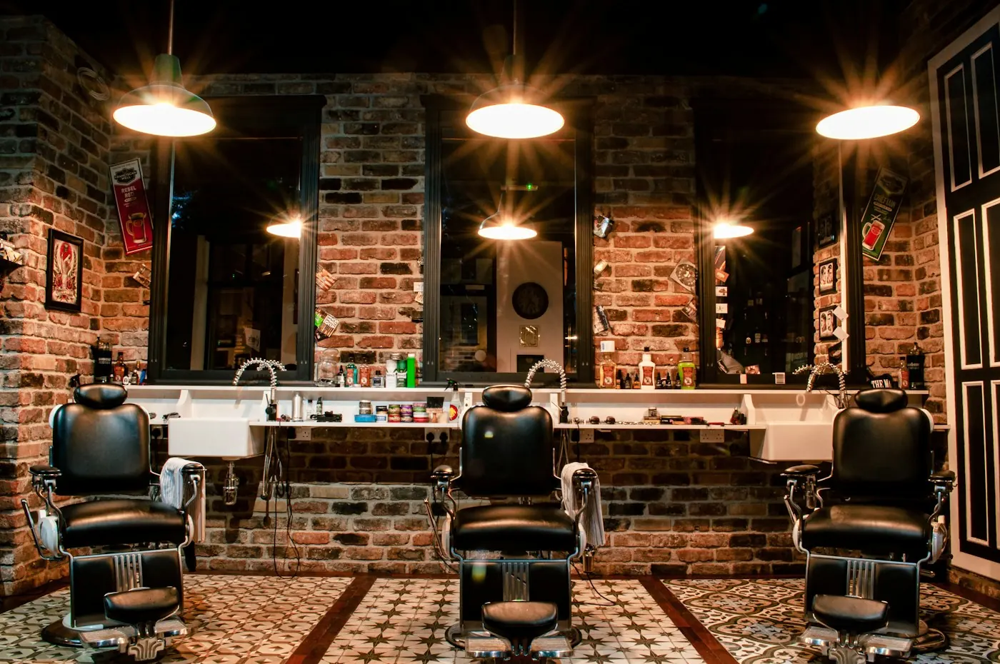

9:41

Olde Towne East, Columbus
The same markup twice. On the left, her look: what app-style.css draws on its own. On the right, the plain style: the first phone cloned, with one class added.

Olde Towne East, Columbus